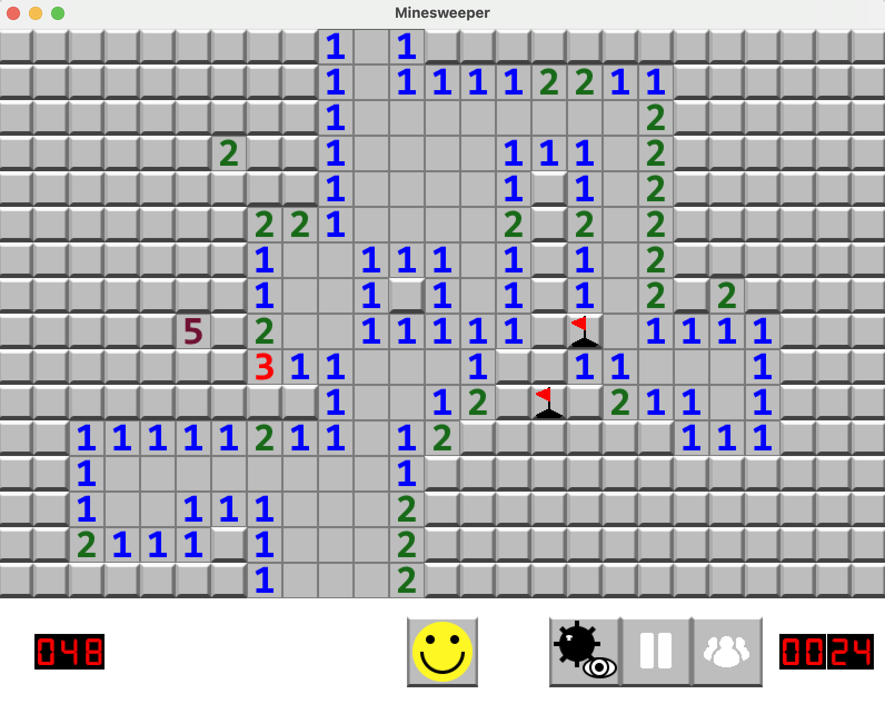

Minesweeper
A C++ / SFML implementation of Minesweeper focused on clean state management, recursive reveal logic, and a polished, responsive UI.

Gameplay snapshot — reveal, flags, timer, and win/loss states.
C++
SFML
OOP
Recursion
File I/O
Language
C++ (SFML)
Core focus
State + edge cases
Key systems
Flood-fill, timer, leaderboard
Deliverable
Playable game + source
◎ Overview
Overview
Project goals and design focus.
What it is
- Classic Minesweeper implemented from scratch
- Left-click reveal, right-click flag
- Pause, reset, debug, and leaderboard systems
What I focused on
- Clear game-state transitions
- Robust edge-case handling
- Readable, modular C++ design
⌁ What I built
What I built
Core systems and skills demonstrated.
SFML render loop
Main window, event polling, sprite rendering, and input handling.
Tile state machine
Encapsulated tile behavior with Hidden / Revealed / Flagged states.
Recursive flood-fill
Automatic reveal of empty regions using recursive neighbor traversal.
Timer + pause
Chrono-based timer that correctly pauses and resumes without drift.
Leaderboard
Persistent top scores via file I/O, sorting, and formatting.
Debug mode
Mine-visibility toggle for testing and validation.
⌘ Tech Notes
Tech Notes
High-level implementation details.
Architecture
- GameWindow: main loop, rendering, input
- Tile: tile state + draw logic
- TextureManager: shared texture caching
- LeaderboardFunctions: persistence + sorting
Algorithms
- Randomized mine placement
- Adjacent mine counting
- Recursive reveal propagation
▶ Demo
Demo
Gameplay walkthrough.
⌘ Links
Links
Play or explore the code.
Live
Code
✎ Reflection
Reflection
What this project reinforced for me.
Key takeaways
- State management is the core of interactive systems.
- Edge cases define perceived quality.
Future work
- Difficulty presets + best-time tracking
- Keyboard + accessibility support